Symbolic Computation with SymPy#
Contents: 1. symbols · 2. printing · 3. functions · 4. root finding · 5. differentiation and limits · 6. integration · 7. evaluation and NumPy · 8. linear algebra · 9. plotting · Activity (4 problems)
We use sympy for symbols and numpy for numbers. All SymPy commands of this notebook are collected in the separate cheat sheet sympy_cheatsheet.pdf.
Installation. If a package is missing, install it once with pip:
where |
command |
|---|---|
in a terminal / command prompt |
|
inside this notebook (a code cell) |
|
upgrade an old version |
|
Restart the kernel after installing, then check the versions with the next cell.
# %pip install sympy numpy matplotlib # uncomment and run once if an import fails
import sympy as sp
import numpy as np
import matplotlib.pyplot as plt
from IPython.display import display, Math
print("sympy", sp.__version__, "| numpy", np.__version__)
---------------------------------------------------------------------------
ModuleNotFoundError Traceback (most recent call last)
Cell In[2], line 1
----> 1 import sympy as sp
2 import numpy as np
3 import matplotlib.pyplot as plt
4 from IPython.display import display, Math
ModuleNotFoundError: No module named 'sympy'
1. Symbols and expressions#
NumPy computes with numbers; SymPy computes with symbols, so x**2 + 2*x stays a formula.
you want to … |
SymPy |
|---|---|
one symbol / several symbols |
|
a numbered list \(x_1, \ldots, x_n\) |
|
a range of letters |
|
a symbol with assumptions |
|
an exact fraction |
|
exact constants |
|
expand / factor / simplify |
|
cancel a fraction / partial fractions / group powers |
|
substitute |
|
Watch out: Python divides integers before SymPy sees them: x + 1/3 contains a float, x + sp.Rational(1, 3) is exact.
Capital or lowercase? SymPy follows the Python naming convention:
style |
what it is |
examples |
|---|---|---|
Capitalised |
a class: calling it creates an object that SymPy stores and works with |
|
Capitalised, unevaluated |
a class that only writes the operation; |
|
lowercase |
a function: it does something and returns the result |
|
lowercase math functions |
written as in mathematics |
|
constants |
|
|
Many come in pairs: sp.Symbol('x') (one object) vs. sp.symbols('x y') (helper for several); sp.Integral(f, x) (written \(\int f\,dx\)) vs. sp.integrate(f, x) (computed).
x, y = sp.symbols('x y')
X = sp.symbols('x1:6') # tuple (x1, ..., x5)
print("numbered symbols:", X, " sum:", sum(X))
print("as a list :", list(sp.symbols('a0:3')))
expr = (x + y)**2 - x * (x - 1)
print("1/3 vs Rational :", x + 1/3, " | ", x + sp.Rational(1, 3))
print("expand :", sp.expand((x + 1)**3))
print("factor :", sp.factor(x**3 - x))
print("simplify :", sp.simplify(sp.sin(x)**2 + sp.cos(x)**2))
print("cancel / apart :", sp.cancel((x**2 - 1) / (x - 1)), " | ", sp.apart(1 / (x * (x + 1)), x))
print("collect :", sp.collect(x**2 + 3*x*y + x + y*x**2, x))
print("subs :", expr.subs({x: 2, y: 3}), " | ", expr.subs(y, sp.sin(x)))
numbered symbols: (x1, x2, x3, x4, x5) sum: x1 + x2 + x3 + x4 + x5
as a list : [a0, a1, a2]
1/3 vs Rational : x + 0.333333333333333 | x + 1/3
expand : x**3 + 3*x**2 + 3*x + 1
factor : x*(x - 1)*(x + 1)
simplify : 1
cancel / apart : x + 1 | -1/(x + 1) + 1/x
collect : x**2*(y + 1) + x*(3*y + 1)
subs : 23 | -x*(x - 1) + (x + sin(x))**2
Assumptions matter. \(\sqrt{x^2} = x\) is false for \(x = -2\), so SymPy simplifies it only when it knows the sign.
for label, s in [("no assumptions", sp.Symbol('x')), ("real=True", sp.Symbol('x', real=True)),
("positive=True", sp.Symbol('x', positive=True))]:
print(f"{label:>15}: sqrt(x**2) ->", sp.simplify(sp.sqrt(s**2)))
k = sp.Symbol('k', integer=True)
print("cos(2*pi*k), k integer:", sp.cos(2 * sp.pi * k))
no assumptions: sqrt(x**2) -> sqrt(x**2)
real=True: sqrt(x**2) -> Abs(x)
positive=True: sqrt(x**2) -> x
cos(2*pi*k), k integer: 1
Python reminder: building a list with a loop, and the short form. Later cells and hints often need “do something for every item of a list”. The basic way is a for loop that starts with an empty list and appends one result per item. Python also has a one-line short form, the list comprehension [expression for item in some_list], read as “the list of expression for every item in some_list”. Both give the same list; use whichever you find clearer.
loop with |
list comprehension |
|---|---|
|
|
|
|
|
|
To turn a list of SymPy numbers into a NumPy array you need neither: np.array(sp_list, dtype=float).
vals = [-2, 0, 3]
out = [] # loop version
for v in vals:
out.append(x**2 - v)
print("loop :", out)
print("comprehension :", [x**2 - v for v in vals])
print("to NumPy :", np.array([sp.sqrt(2), sp.pi, sp.Rational(1, 3)], dtype=float))
loop : [x**2 + 2, x**2, x**2 - 3]
comprehension : [x**2 + 2, x**2, x**2 - 3]
to NumPy : [1.41421356 3.14159265 0.33333333]
2. Printing: print, pprint, init_printing, display, latex#
command |
output |
use it for |
|---|---|---|
|
plain text, |
logs, copying into Python |
|
ASCII art |
a quick look without LaTeX |
|
from now on the last line of a cell is rendered as math |
working in Jupyter |
|
rendered math from anywhere in a cell |
several formulas in one cell |
|
a string of LaTeX, |
reports, Markdown, plot titles |
|
|
Markdown, Matplotlib |
|
|
pasting into a |
|
|
same |
|
|
writing an equation |
|
|
matrices with round brackets |
|
renders a LaTeX string |
your own LaTeX mixed with |
Watch out: print() is always plain text, even after init_printing(). To use an environment like align that SymPy does not produce, build the string yourself: r"\begin{align}" + ... + r"\end{align}".
e = sp.Integral(sp.sqrt(x) / (1 + x**2), (x, 0, sp.oo))
print("print :", e)
sp.pprint(e)
print("latex :", sp.latex(e))
print("inline :", sp.latex(e, mode='inline'))
print("equat. :", sp.latex(sp.Eq(sp.Symbol('I'), e), mode='equation'))
print("matrix :", sp.latex(sp.Matrix([[1, x], [0, 1]]), mat_str='pmatrix', mat_delim=''))
lines = [sp.latex(sp.Eq(sp.Function('f')(x), x**2)), sp.latex(sp.Eq(sp.Derivative(sp.Function('f')(x), x), 2*x))]
print("align :", r"\begin{align}" + r" \\ ".join(l.replace("=", "&=", 1) for l in lines) + r"\end{align}")
print : Integral(sqrt(x)/(x**2 + 1), (x, 0, oo))
∞
⌠
⎮ √x
⎮ ────── dx
⎮ 2
⎮ x + 1
⌡
0
latex : \int\limits_{0}^{\infty} \frac{\sqrt{x}}{x^{2} + 1}\, dx
inline : $\int_{0}^{\infty} \frac{\sqrt{x}}{x^{2} + 1}\, dx$
equat. : \begin{equation}I = \int\limits_{0}^{\infty} \frac{\sqrt{x}}{x^{2} + 1}\, dx\end{equation}
matrix : \begin{pmatrix}1 & x\\0 & 1\end{pmatrix}
align : \begin{align}f{\left(x \right)} &= x^{2} \\ \frac{d}{d x} f{\left(x \right)} &= 2 x\end{align}
sp.init_printing() # rendered math for the rest of the notebook
display(e)
display(Math(r"I = " + sp.latex(e.doit())))
sp.Matrix([[1, x], [x**2, sp.Rational(1, 2)]]) # last line: rendered automatically
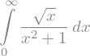
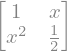
3. Functions#
kind |
how |
use it for |
|---|---|---|
expression |
|
most work: diff, integrate, solve |
Python function returning an expression |
|
building expressions programmatically |
|
|
a function object inside SymPy |
undefined function (one) |
|
unknown functions, ODEs |
several undefined functions |
|
same, many at once |
numbered undefined functions |
|
systems of ODEs, families of functions |
piecewise |
|
functions defined by cases |
Several functions with cls. sp.symbols normally creates Symbol objects. The keyword cls (short for class) tells it which class to create instead: with cls=sp.Function every name becomes an undefined function, so all the shortcuts of sp.symbols (several names, numbered ranges like 'u1:4') work for functions too. Each one must be called with its argument before use: f(x), u[0](t).
Piecewise. The pairs are checked in order; the first true condition wins, and True at the end means “otherwise”. Conditions are SymPy relations (x < 0, x >= 1, sp.Eq(x, 0)), combined with
logic |
SymPy |
operator form |
|---|---|---|
and |
|
|
or |
|
|
not |
|
|
Watch out: Python’s and, or and the chained 0 <= x < 1 do not work on symbols: they raise TypeError: cannot determine truth value of Relational. With the operator form, the parentheses are required.
Example with three pieces: \(\;p(x) = \begin{cases} -x & x < 0 \\ x^2 & 0 \le x < 1 \\ x & \text{otherwise} \end{cases}\)
f_expr = x**2 * sp.exp(-x)
def f_py(t):
return t**2 * sp.exp(-t)
f_lam = sp.Lambda(x, x**2 * sp.exp(-x))
display(f_expr.subs(x, 3), f_py(3), f_lam(3), f_py(y + 1))
f = sp.Function('f') # one undefined function
f, g = sp.symbols('f g', cls=sp.Function) # several at once
u = sp.symbols('u1:4', cls=sp.Function) # numbered: (u1, u2, u3)
print("u =", u, " u[0](x) =", u[0](x))
display(sp.diff(f(x) * g(x), x), sp.diff(f(g(x)), x))
display(sp.diff(u[0](x) * u[1](x) * u[2](x), x)) # product rule for three functions
display(sp.dsolve(f(x).diff(x, 2) + f(x), f(x))) # ODE f'' + f = 0
p = sp.Piecewise((-x, x < 0), (x**2, sp.And(0 <= x, x < 1)), (x, True))
display(p) # 0 <= x is dropped: x < 0 was already handled
print("p at -2, 1/2, 3:", [p.subs(x, v) for v in (-2, sp.Rational(1, 2), 3)])
print("LaTeX (cases environment):", sp.latex(p))
outside = sp.Piecewise((1, sp.Or(x < -1, x > 1)), (0, True))
print("outside [-1, 1] at -2, 0, 2:", [outside.subs(x, v) for v in (-2, 0, 2)])
print("on a NumPy array:", sp.lambdify(x, p, 'numpy')(np.array([-2, 0.5, 3])))
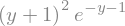
u = (u1, u2, u3) u[0](x) = u1(x)
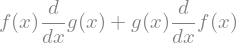
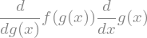
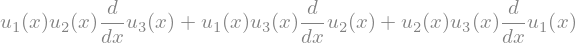
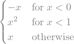
p at -2, 1/2, 3: [2, 1/4, 3]
LaTeX (cases environment): \begin{cases} - x & \text{for}\: x < 0 \\x^{2} & \text{for}\: x < 1 \\x & \text{otherwise} \end{cases}
outside [-1, 1] at -2, 0, 2: [1, 0, 1]
on a NumPy array: [2. 0.25 3. ]
4. Root finding#
function |
returns |
when |
|---|---|---|
|
a list of exact solutions of \(e = 0\) |
polynomials, simple equations |
|
same, for \(\text{lhs} = \text{rhs}\) |
|
|
a dict (or list of dicts) |
systems |
|
a set, possibly infinite or empty |
all solutions on a domain |
|
|
polynomials |
|
list of real roots |
polynomials |
|
one number, Newton’s method from the guess |
no formula exists (e.g. \(\cos x = x\)) |
Strategy: try solve; if the answer is huge or SymPy gives up, use nsolve with a guess read off a plot.
display(sp.solve(x**2 - 5*x + 6, x), sp.solve(sp.Eq(x**2, 2), x))
display(sp.solve([x + y - 3, x - y - 1], [x, y]))
display(sp.roots((x - 1)**3 * (x + 2), x))
display(sp.solveset(sp.sin(x), x, domain=sp.S.Reals), sp.solveset(x**2 + 1, x, domain=sp.S.Reals))
display(sp.nsolve(sp.cos(x) - x, x, 1))
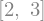
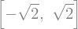
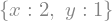
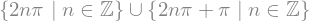
5. Differentiation and limits#
mathematics |
SymPy |
|---|---|
\(\dfrac{df}{dx} = f'(x)\) |
|
\(\dfrac{d^2 f}{dx^2} = f''(x)\), \(\;\dfrac{d^n f}{dx^n}\) |
|
\(\dfrac{\partial F}{\partial y}\) |
|
\(\dfrac{\partial^2 F}{\partial x\,\partial y}\) |
|
\(\dfrac{\partial^3 F}{\partial x^2\,\partial y}\) (2nd power in \(x\), 1st in \(y\)) |
|
\(\dfrac{d}{dx} f\) written but not evaluated |
|
\(\nabla F = \left(\dfrac{\partial F}{\partial x}, \dfrac{\partial F}{\partial y}\right)\) |
|
Hessian \(\begin{pmatrix} F_{xx} & F_{xy} \\ F_{yx} & F_{yy} \end{pmatrix}\) |
|
Taylor series \(\displaystyle\sum_{k=0}^{n-1} \frac{f^{(k)}(x_0)}{k!}(x - x_0)^k + O\big((x-x_0)^n\big)\) |
|
tangent line \(y = f(x_0) + f'(x_0)(x - x_0)\) |
|
right limit \(\displaystyle\lim_{x \to x_0^+} f(x)\) |
|
left limit \(\displaystyle\lim_{x \to x_0^-} f(x)\) |
|
two-sided limit \(\displaystyle\lim_{x \to x_0} f(x)\) |
|
\(\displaystyle\lim_{x \to \infty} f(x)\) |
|
Watch out:
sp.limitwithoutdiris the right limit. For \(|x|/x\) at \(0\) it returns \(1\), although the two-sided limit does not exist.sp.limitis not reliable on aPiecewiseat a break point. Take the limit of the piece that applies on each side instead: for the left limit at a break, use the piece to the left withdir='-'.
f_expr = x**2 * sp.exp(-x)
d = sp.Derivative(f_expr, x)
display(sp.Eq(d, d.doit()), sp.factor(sp.diff(f_expr, x, 2)))
F = x**3 * y**2 + sp.exp(x * y)
d3 = sp.Derivative(F, x, 2, y) # d^3 F / dx^2 dy
display(sp.Eq(d3, sp.factor(d3.doit())))
display([sp.diff(F, v) for v in (x, y)], sp.hessian(F, (x, y)))
display(sp.series(sp.exp(x), x, 0, 5))
s = sp.Abs(x) / x
print("right:", sp.limit(s, x, 0), " left:", sp.limit(s, x, 0, dir='-'))
try:
sp.limit(s, x, 0, dir='+-')
except ValueError as err:
print("two-sided:", err)
print("sin(x)/x two-sided:", sp.limit(sp.sin(x) / x, x, 0, dir='+-'), " (1+1/x)^x at oo:", sp.limit((1 + 1/x)**x, x, sp.oo))
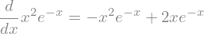
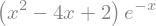
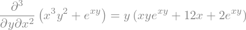
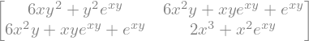
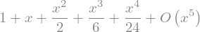
right: 1 left: -1
two-sided: The limit does not exist since left hand limit = -1 and right hand limit = 1
sin(x)/x two-sided: 1 (1+1/x)^x at oo: E
6. Integration#
you want |
SymPy |
|---|---|
antiderivative \(\int f\,dx\) (SymPy does not add \(+C\)) |
|
definite \(\int_a^b f\,dx\) |
|
improper, \(\int_0^\infty\) |
|
double integral \(\int_0^1\!\int_0^x f\,dy\,dx\) |
|
unevaluated (for display) |
|
numerical value |
|
Check an antiderivative by differentiating it: sp.simplify(sp.diff(F, x) - f) should be 0.
No elementary formula? SymPy may answer with a special function (\(\operatorname{erf}\), \(\operatorname{Si}\), …) or return the Integral unevaluated. Either way .evalf() still gives a number.
f_expr = x**2 * sp.exp(-x)
F = sp.integrate(f_expr, x)
display(F, sp.simplify(sp.diff(F, x) - f_expr)) # check: 0
I = sp.Integral(f_expr, (x, 1, 4))
display(sp.Eq(I, I.doit()), I.evalf())
display(sp.integrate(sp.exp(-x**2), (x, -sp.oo, sp.oo))) # Gaussian: sqrt(pi)
display(sp.integrate(x * y, (y, 0, x), (x, 0, 1))) # double integral
hard = sp.integrate(sp.sin(x) / x, (x, 0, 1)) # special function Si
display(hard, hard.evalf(20))
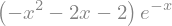
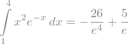
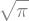
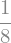
7. Evaluation and moving to NumPy#
you want |
SymPy |
result type |
|---|---|---|
plug in exact values |
|
SymPy (exact) |
a decimal with \(n\) digits |
|
SymPy |
plug in and evaluate |
|
SymPy |
a Python float |
|
|
a fast NumPy function |
|
works on arrays |
several variables |
|
|
a matrix as an array |
|
|
Why lambdify? subs walks the symbolic tree for every single value: slow. lambdify translates the formula once into NumPy code (sp.exp becomes np.exp, …), which then runs on a whole array at once.
Watch out:
np.exp(x)on a symbol fails: usesp.expfor symbols,np.expfor arrays.A constant expression lambdifies to a function that returns a scalar, not an array:
sp.lambdify(x, sp.Integer(3))(xs)is3. Usenp.full_like(xs, ...)or add0 * xsbefore plotting.
import time
f_expr = x**2 * sp.exp(-x)
display(f_expr.subs(x, 2), f_expr.subs(x, 2).evalf(), sp.N(f_expr.subs(x, 2), 30), float(f_expr.subs(x, 2)))
f_np = sp.lambdify(x, f_expr, 'numpy')
xs = np.linspace(0, 8, 2000)
t0 = time.perf_counter(); slow = [float(f_expr.subs(x, v)) for v in xs]; t1 = time.perf_counter()
fast = f_np(xs); t2 = time.perf_counter()
print(f"subs in a loop: {t1 - t0:.4f} s, lambdify: {t2 - t1:.6f} s, same values: {np.allclose(slow, fast)}")
F2 = sp.lambdify((x, y), sp.sin(x) * sp.cos(y), 'numpy') # two variables
print("F2(0.5, [0, 1, 2]) =", F2(0.5, np.array([0, 1, 2])))
const = sp.lambdify(x, sp.diff(3 * x, x), 'numpy') # derivative is the constant 3
print("constant lambdified on an array:", const(xs[:4]), " -> use np.full_like:", np.full_like(xs[:4], const(xs[:4])))
M = sp.Matrix([[1, sp.Rational(1, 2)], [sp.sqrt(2), sp.pi]])
print("Matrix -> NumPy:\n", np.array(M, dtype=float))
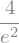
subs in a loop: 0.6868 s, lambdify: 0.000108 s, same values: True
F2(0.5, [0, 1, 2]) = [ 0.47942554 0.25903472 -0.19951142]
constant lambdified on an array: 3 -> use np.full_like: [3. 3. 3. 3.]
Matrix -> NumPy:
[[1. 0.5 ]
[1.41421356 3.14159265]]
8. Linear algebra with sp.Matrix#
SymPy matrices are exact: no rounding in an RREF, a determinant is an exact integer or formula, and entries can be symbols.
you want |
SymPy |
|---|---|
a matrix / identity / zeros |
|
transpose, inverse |
|
matrix product, power |
|
elementwise product (Hadamard) |
|
apply a function to every entry |
|
determinant, rank |
|
reduced row echelon form |
|
null space / column space |
|
eigenvalues |
|
eigenvectors |
|
eigenspace of \(\lambda\) |
|
diagonalize \(A = P D P^{-1}\) |
|
Watch out: we write the matrix product as A @ B. It means the same for SymPy matrices and NumPy arrays. (A * B is also the matrix product for SymPy matrices, but elementwise for NumPy arrays, so @ avoids confusion.)
Eigenspace dimension. The algebraic multiplicity of \(\lambda\) (how often it is a root of \(\det(A - \lambda I)\)) can be larger than the geometric multiplicity (the dimension of the eigenspace). \(A\) is diagonalizable exactly when they agree for every \(\lambda\).
A = sp.Matrix([[2, 1, 0],
[1, 2, 0],
[0, 0, 3]])
R, piv = A.rref()
display(R, piv, A.det(), A.rank(), A.inv())
display(A.eigenvals()) # {1: 1, 3: 2}
for lam, mult, vecs in A.eigenvects():
print(f"lambda = {lam}: algebraic multiplicity {mult}, eigenspace dimension {len(vecs)}")
display((A - 3 * sp.eye(3)).nullspace()) # eigenspace of 3 by hand
J = sp.Matrix([[2, 1], [0, 2]]) # a Jordan block: NOT diagonalizable
display(J.eigenvects(), J.is_diagonalizable())
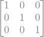
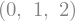
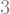
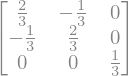
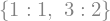
lambda = 1: algebraic multiplicity 1, eigenspace dimension 1
lambda = 3: algebraic multiplicity 2, eigenspace dimension 2
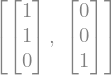
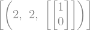
False
B = sp.Matrix([[1, 2], [3, 4]])
C = sp.Matrix([[0, 1], [1, 0]])
display(B @ C, B.multiply_elementwise(C), B.applyfunc(lambda e: e**2), B**2)
# symbolic power A**n through diagonalization
n = sp.Symbol('n', integer=True, nonnegative=True)
P, D = A.diagonalize()
display(P, D)
An = sp.simplify(P @ D**n @ P.inv())
display(An, An.subs(n, 4) == A**4)
# symbolic entries: for which a is S singular?
a = sp.Symbol('a')
S = sp.Matrix([[1, a], [a, 4]])
display(S.det(), sp.solve(S.det(), a))
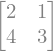
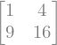
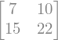
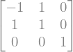
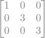
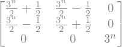
True
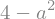
9. Plotting symbolic results with Matplotlib#
The recipe: compute symbolically, lambdify, plot numerically, label with sp.latex. Matplotlib understands LaTeX between $...$ in titles and labels.
Below: \(f(x) = x^2 e^{-x}\) with the area \(\int_1^4 f\,dx\) shaded, and the exact value in the title.
f_expr = x**2*sp.exp(-x)
f_np = sp.lambdify(x, f_expr, 'numpy')
xs = np.linspace(0, 8, 400)
fig, ax = plt.subplots(figsize=(7, 3.5))
ax.plot(xs, f_np(xs), lw=2)
mask = (xs >= 1) & (xs <= 4)
ax.fill_between(xs[mask], f_np(xs[mask]), alpha=0.3)
area = sp.integrate(f_expr, (x, 1, 4))
ax.set_title(f"$\\int_1^4 {sp.latex(f_expr)}\\,dx = {sp.latex(sp.simplify(area))} \\approx {float(area):.4f}$")
plt.show()
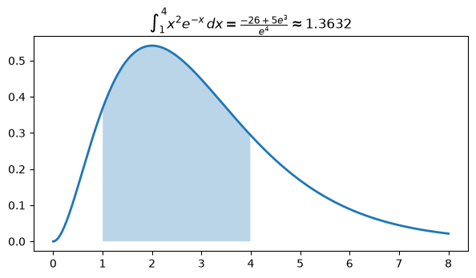
A second example: a function, its derivative, and the critical point found with solve, all from one symbolic expression. The legend labels are generated by sp.latex, so they never disagree with the code.
fp_expr = sp.diff(f_expr, x)
crit = sp.solve(fp_expr, x) # [0, 2]
fp_np = sp.lambdify(x, fp_expr, 'numpy')
crit_f = np.array(crit, dtype=float)
fig, ax = plt.subplots(figsize=(7, 3.5))
ax.plot(xs, f_np(xs), lw=2, label=f"$f(x) = {sp.latex(f_expr)}$")
ax.plot(xs, fp_np(xs), "--", label=f"$f'(x) = {sp.latex(sp.factor(fp_expr))}$")
ax.axhline(0, color="k", lw=0.5)
ax.plot(crit_f, f_np(crit_f), "ko", label="critical points: " + ", ".join(f"${sp.latex(c)}$" for c in crit))
ax.set_xlabel("$x$")
ax.legend()
plt.show()
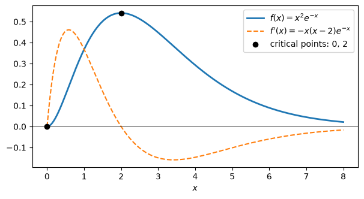
Quick look without NumPy: sp.plot(f_expr, (x, 0, 8)) draws an expression directly. It is handy for a first look; for anything you want to customise (shading, markers, several panels) use the lambdify + Matplotlib recipe above.
Activity#
Four problems; the last one combines integration, NumPy and plotting. Each step says what your code should do. Write the code in the empty cell, then run the check cell: it prints your results next to the expected ones. Open a Hint box only when you are stuck; complete code for every step is in the separate notebook sympy_intro_solutions.ipynb.
About None and pass: replace None by your answer, and delete pass once you write the body of a function.
Useful SymPy for this activity
you want to … |
SymPy |
|---|---|
symbols with assumptions |
|
simplify / expand / factor |
|
are two expressions equal? |
|
LaTeX string / pretty print |
|
exact roots / numeric root |
|
derivative, Hessian |
|
integral |
|
a number |
|
NumPy function |
|
RREF, rank, det, null space |
|
eigenvalues, eigenspace |
|
matrix vs elementwise product |
|
Problem 1: symbols, functions and printing#
Goal: build expressions with the right assumptions, write a Python function that builds an expression for you, and print the result in three ways.
What you will see: the same formula simplifies differently depending on what SymPy knows about the symbols, and one expression has several printed forms.
Run the cell below to create the symbols for this problem (do not change it).
x = sp.Symbol('x', real=True)
t = sp.Symbol('t', positive=True)
Step 1: assumptions and simplification#
Write code that:
builds \(E_1 = \sqrt{t^2}\,\dfrac{x^2 - 1}{x - 1}\) and stores its simplified form in
E1_simple;builds \(E_2 = \sqrt{x^2}\) and stores its simplified form in
E2_simple;displays both.
Hint
Use sp.sqrt, not np.sqrt. sp.simplify(sp.sqrt(t**2) * (x**2 - 1) / (x - 1)).
# your code here: replace each None
E1_simple = None
E2_simple = None
# check: compare your results with the expected ones
if E1_simple is None or E2_simple is None:
print("E1_simple or E2_simple is still None: write the code in the cell above, then run this cell again.")
else:
print("E1_simple =", E1_simple, " (expected: t*(x + 1))")
print("E2_simple =", E2_simple, " (expected: Abs(x), because x is only known to be real)")
print("E1 correct:", sp.simplify(E1_simple - t * (x + 1)) == 0)
E1_simple or E2_simple is still None: write the code in the cell above, then run this cell again.
Questions:
Why does \(\sqrt{t^2}\) become \(t\) but \(\sqrt{x^2}\) become \(|x|\)?
What would \(\sqrt{x^2}\) simplify to if you had created
x = sp.Symbol('x')with no assumptions? Try it.
Step 2: a function that builds expressions#
Write a function make_poly(coeffs, var).
Inputs: coeffs, a list \([c_0, c_1, \ldots, c_n]\), and a symbol var.
Returns the expression \(c_0 + c_1\,\text{var} + c_2\,\text{var}^2 + \cdots + c_n\,\text{var}^n\).
Example: make_poly([1, -3, 0, 2], x) gives \(2x^3 - 3x + 1\).
Hint
Start from result = 0 and add one term per coefficient in a loop (coeffs[i] is \(c_i\)):
result = 0
for i in range(len(coeffs)):
result = result + coeffs[i] * var**i
return result
Short form (see the Python reminder in Section 1): return sum(coeffs[i] * var**i for i in range(len(coeffs))).
def make_poly(coeffs, var):
# Write your code here, then delete the line `pass` below.
pass
# check: compare your results with the expected ones
P = make_poly([1, -3, 0, 2], x)
if P is None:
print("make_poly returned None: finish the function (and delete the line `pass`), then run this cell again.")
else:
print("make_poly([1, -3, 0, 2], x) =", P, " (expected: 2*x**3 - 3*x + 1)")
print("make_poly([0, 1], t)**2 =", sp.expand(make_poly([0, 1], t)**2), " (expected: t**2)")
make_poly returned None: finish the function (and delete the line `pass`), then run this cell again.
Step 3: three ways to print#
For P = make_poly([1, -3, 0, 2], x), write code that:
prints
Pwithprint;prints
Pwithsp.pprint;stores the LaTeX code of
Pin the stringP_texand prints it;renders
P_texas math withdisplay(Math("P(x) = " + P_tex));renders \(\dfrac{d}{dx}P(x)\) as an equation
Derivative = resultusingsp.Eq(sp.Derivative(P, x), sp.diff(P, x));stores in
P_eqthe LaTeX of the equation \(P(x) = 2x^3 - 3x + 1\) inside anequationenvironment, and prints it.
Hint
P_tex = sp.latex(P). For 6: sp.latex(sp.Eq(sp.Function('P')(x), P), mode='equation').
# your code here: replace each None by a LaTeX string
P_tex = None
P_eq = None
# check: compare your results with the expected ones
if P_tex is None or P_eq is None:
print("P_tex or P_eq is still None: write the code in the cell above, then run this cell again.")
else:
print("P_tex =", P_tex, " (expected: 2 x^{3} - 3 x + 1)")
print("P_eq =", P_eq, " (expected: \\begin{equation}P{\\left(x \\right)} = 2 x^{3} - 3 x + 1\\end{equation})")
P_tex or P_eq is still None: write the code in the cell above, then run this cell again.
Questions:
Which of the outputs could you paste back into Python? Which into a LaTeX report?
In the plot titles of Section 9, commands like
\intare written\\intinside the f-string. Why? (See “LaTeX output” in the cheat sheet.)
Problem 2: roots and derivatives#
Goal: find and classify the critical points of
find its real root, solve an equation that has no formula, and find the minimum of a function of two variables.
What you will see: solve is perfect for \(f'(x) = 0\), but returns an unreadable formula for \(f(x) = 0\); nsolve gives the number directly.
Run the cell below (do not change it).
x, y = sp.symbols('x y', real=True)
f2 = x**3 - 6*x**2 + 9*x + 1
Step 1: critical points and the second derivative test#
Write code that:
computes \(f'\) and \(f''\) (call them
fp2andfpp2);solves \(f'(x) = 0\) and stores the sorted list of solutions in
crit2;builds a list
kinds2with one string per critical point:"max"if \(f'' < 0\) there,"min"if \(f'' > 0\);prints, for each critical point, the point, \(f\) there, and its kind.
Hint
crit2 = sorted(sp.solve(fp2, x)). Then build kinds2 with a loop:
kinds2 = []
for c in crit2:
if fpp2.subs(x, c) < 0:
kinds2.append("max")
else:
kinds2.append("min")
Short form: kinds2 = ["max" if fpp2.subs(x, c) < 0 else "min" for c in crit2].
# your code here: replace each None
fp2 = None
fpp2 = None
crit2 = None
kinds2 = None
# check: compare your results with the expected ones
if crit2 is None or kinds2 is None:
print("crit2 or kinds2 is still None: write the code in the cell above, then run this cell again.")
else:
print("crit2 =", crit2, " (expected: [1, 3])")
print("kinds2 =", kinds2, " (expected: ['max', 'min'])")
print("f at the critical points:", [f2.subs(x, c) for c in crit2], " (expected: [5, 1])")
crit2 or kinds2 is still None: write the code in the cell above, then run this cell again.
Step 2: exact or numeric roots?#
Write code that:
displays
sp.solve(f2, x)and looks at it (do not try to read it all);stores the real root of \(f\) as a number in
root2, usingsp.nsolvewith the initial guess \(x_0 = 0\);stores the solution of \(\cos x = x\) in
r_cos, usingsp.nsolvewith the initial guess \(x_0 = 1\).
Why these guesses: from Step 1, \(f\) has a local max \(5\) at \(x=1\) and a local min \(1 > 0\) at \(x = 3\), so the only real root is left of \(x = 1\); \(f(0) = 1 > 0\) and \(f(-1) = -15 < 0\), so it lies between \(-1\) and \(0\). For \(\cos x = x\): at \(x = 1\), \(\cos 1 \approx 0.54 < 1\), and at \(x = 0\), \(\cos 0 = 1 > 0\), so the solution lies between \(0\) and \(1\).
Hint
sp.nsolve(f2, x, 0) and sp.nsolve(sp.cos(x) - x, x, 1). sp.real_roots(f2) gives the same root as an exact CRootOf object; .evalf() turns it into a number.
# your code here: replace each None
root2 = None
r_cos = None
# check: compare your results with the expected ones
if root2 is None or r_cos is None:
print("root2 or r_cos is still None: write the code in the cell above, then run this cell again.")
else:
print("root2 =", sp.N(root2, 10), " (expected: -0.1038034027)")
print("r_cos =", sp.N(r_cos, 10), " (expected: 0.7390851332, the fixed point of cos)")
root2 or r_cos is still None: write the code in the cell above, then run this cell again.
Step 3: two variables#
For \(F(x, y) = x^2 + xy + y^2 - 3x\), write code that:
computes the gradient
gradas a list \([\partial F/\partial x,\ \partial F/\partial y]\);solves
grad = 0(a system of two equations) and stores the result incrit_xy;computes the Hessian
Hwithsp.hessian, and its eigenvalues withH.eigenvals().
Hint
grad = [sp.diff(F_xy, x), sp.diff(F_xy, y)]. sp.solve(grad, [x, y]) returns a dict like {x: ..., y: ...}. A critical point is a minimum when all eigenvalues of the Hessian are positive.
F_xy = x**2 + x*y + y**2 - 3*x
# your code here: replace each None
grad = None
crit_xy = None
H = None
# check: compare your results with the expected ones
if crit_xy is None or H is None:
print("crit_xy or H is still None: write the code in the cell above, then run this cell again.")
else:
print("crit_xy =", crit_xy, " (expected: {x: 2, y: -1})")
print("H =", H.tolist(), " (expected: [[2, 1], [1, 2]])")
print("eigenvals of H =", H.eigenvals(), " (expected: eigenvalues 1 and 3, each once; dict order may vary)")
crit_xy or H is still None: write the code in the cell above, then run this cell again.
Questions:
Why is
solvefine for \(f'(x) = 0\) but not useful for \(f(x) = 0\)? (Compare the degrees.)What happens if you start
nsolve(f2, x, 3)? Explain with the local minimum at \(x = 3\).Is \((2, -1)\) a minimum, a maximum or a saddle point of \(F\)? How do the eigenvalues of \(H\) tell you?
Problem 3: linear algebra#
Goal: analyse a singular matrix with RREF, rank and null space; diagonalize a matrix with a repeated eigenvalue and compute \(A^n\) for symbolic \(n\); and see the difference between the matrix product and the elementwise product.
Run the cell below (do not change it).
B3 = sp.Matrix([[1, 2, 3], [4, 5, 6], [7, 8, 9]])
A3 = sp.Matrix([[4, 1, -1], [2, 5, -2], [1, 1, 2]])
n = sp.Symbol('n', integer=True, nonnegative=True)
Step 1: RREF, rank, determinant, null space of \(B\)#
Write code that computes and displays:
the RREF of \(B\) and its pivot columns (
R3, piv3);the rank
rank3and the determinantdet3;a basis
null3of the null space, and checks that \(B v = 0\) for each basis vector \(v\).
Hint
R3, piv3 = B3.rref(), B3.rank(), B3.det(), B3.nullspace(). null3 is a list of vectors; check each one in a loop: for v in null3: display(B3 @ v).
# your code here: replace each None
R3, piv3 = None, None
rank3 = None
det3 = None
null3 = None
# check: compare your results with the expected ones
if R3 is None or rank3 is None or det3 is None or null3 is None:
print("Something is still None: write the code in the cell above, then run this cell again.")
else:
print("R3 =", R3.tolist(), " (expected: [[1, 0, -1], [0, 1, 2], [0, 0, 0]])")
print("piv3 =", piv3, " (expected: (0, 1))")
print("rank3 =", rank3, " det3 =", det3, " (expected: 2 and 0)")
print("null3 =", [v.T.tolist()[0] for v in null3], " (expected: [[1, -2, 1]])")
Something is still None: write the code in the cell above, then run this cell again.
Step 2: diagonalization, matrix powers and elementwise products#
Write code that:
diagonalizes \(A\):
P3, D3 = A3.diagonalize(), and checks \(A = P D P^{-1}\);computes the symbolic power
An3\(= P D^n P^{-1}\) (simplified), and checks that substituting \(n = 5\) gives the same matrix asA3**5;computes the matrix product
A3 @ A3and the elementwise productA3.multiply_elementwise(A3), stores them inprod3andhadamard3, and displays both.
Hint
An3 = sp.simplify(P3 @ D3**n @ P3.inv()), then An3.subs(n, 5) == A3**5. A3**n directly also works in SymPy; compare.
# your code here: replace each None
An3 = None
prod3 = None
hadamard3 = None
# check: compare your results with the expected ones
if An3 is None or prod3 is None or hadamard3 is None:
print("Something is still None: write the code in the cell above, then run this cell again.")
else:
print("An3[1, 1] =", An3[1, 1], " (expected: 5**n)")
print("An3.subs(n, 5)[0,0] =", An3.subs(n, 5)[0, 0], " (expected: 1684)")
print("prod3 =", prod3.tolist(), " (expected: [[17, 8, -8], [16, 25, -16], [8, 8, 1]])")
print("hadamard3 =", hadamard3.tolist(), " (expected: [[16, 1, 1], [4, 25, 4], [1, 1, 4]])")
Something is still None: write the code in the cell above, then run this cell again.
Questions:
\(\det B = 0\), \(\operatorname{rank} B = 2\), and the null space has dimension \(1\). How are these three facts related (rank-nullity)?
The eigenvalue \(3\) is a double root. Look at the columns of
P3that belong to it: why is \(A\) still diagonalizable?As \(n \to \infty\), which eigenvalue dominates the entries of \(A^n\)? Read it off
An3.
Problem 4: integrals, NumPy and plotting#
Goal: analyse and plot
using only symbolic results for every special point, line and number in the figure, and check an exact integral against a numerical one.
What you will see: with SymPy doing the algebra, the roots, the critical points, the tangent line and the areas all come out exact; lambdify turns them into NumPy functions for numerics and plotting.
Run the cell below (do not change it).
x = sp.Symbol('x', real=True)
h4 = (x**2 - 4) * sp.exp(-x / 3)
Step 1: the symbolic part#
Write code that computes:
roots4: the sorted roots of \(h\);crit4: the sorted critical points (roots of \(h'\)), exactly; display them, and their decimal values;tangent4: the tangent line at \(x_0 = 0\), as an expanded expression;H4: an antiderivative of \(h\), checked by differentiating:sp.simplify(sp.diff(H4, x) - h4)should be0;area4: the exact value of \(\int_{-2}^{2} h\,dx\) (simplified), and its float;area4_inf: the exact value of the improper integral \(\int_{-2}^{\infty} h\,dx\).
Hint
sorted(sp.solve(h4, x)); sorted(sp.solve(sp.diff(h4, x), x), key=float); tangent: h4.subs(x, 0) + sp.diff(h4, x).subs(x, 0) * (x - 0); sp.integrate(h4, x); sp.simplify(sp.integrate(h4, (x, -2, 2))); for \(\infty\) use sp.oo.
# your code here: replace each None
roots4 = None
crit4 = None
tangent4 = None
H4 = None
area4 = None
area4_inf = None
# check: compare your results with the expected ones
if roots4 is None or crit4 is None or tangent4 is None or H4 is None or area4 is None or area4_inf is None:
print("Something is still None: write the code in the cell above, then run this cell again.")
else:
print("roots4 =", roots4, " (expected: [-2, 2])")
print("crit4 =", crit4, " (expected: [3 - sqrt(13), 3 + sqrt(13)])")
print("tangent4 =", tangent4, " (expected: 4*x/3 - 4)")
print("H4' - h4 =", sp.simplify(sp.diff(H4, x) - h4), " (expected: 0)")
print("area4 =", round(float(area4), 6), " (expected: -11.148328, negative because h < 0 on (-2, 2))")
print("area4_inf=", area4_inf, " (expected: 18*exp(2/3), about 35.059)")
Something is still None: write the code in the cell above, then run this cell again.
Step 2: the trapezoid rule with lambdify#
Write a function trap(f_np, a, b, N).
Inputs: a NumPy function f_np, the interval \([a, b]\), and the number of sub-intervals \(N\).
Returns the trapezoid approximation \(\displaystyle h\left(\tfrac12 f(x_0) + f(x_1) + \cdots + f(x_{N-1}) + \tfrac12 f(x_N)\right)\) with step \(h = (b - a)/N\) and \(x_i = a + i\,h\).
Then, for the area of Step 1, \(a = -2\) and \(b = 2\):
make the NumPy function
h4_np = sp.lambdify(x, h4, 'numpy');for \(N = 10, 20, 40, 80, 160\), print \(N\) and the error \(|\,\text{trap}(h, -2, 2, N) - \text{area}\,|\), where the area is
float(area4)from Step 1.
Hint
Go through the points \(x_0, \ldots, x_N\) one at a time with a for loop, and use an if to give the two end points the weight \(\tfrac12\) (the step is called step here so it does not clash with the function \(h\)):
step = (b - a) / N
total = 0
for i in np.arange(0, N + 1): # i = 0, 1, ..., N
xi = a + i * step
if i == 0 or i == N: # end points count half
total = total + f_np(xi) / 2
else:
total = total + f_np(xi)
return step * total
For the error table, loop over the list [10, 20, 40, 80, 160] and call trap(h4_np, -2, 2, N) inside the loop.
def trap(f_np, a, b, N):
# Write your code here, then delete the line `pass` below.
pass
# your code here: replace None, then print the error table for a = -2, b = 2
h4_np = None
# check: compare your results with the expected ones
if h4_np is None or trap(np.exp, 0, 1, 10) is None:
print("h4_np is still None or trap returned None: finish the cell above, then run this cell again.")
else:
print("trap(h4_np, -2, 2, 10) =", round(float(trap(h4_np, -2, 2, 10)), 6), " (expected: -11.017285)")
print("error at N = 160 =", f"{abs(trap(h4_np, -2, 2, 160) - float(area4)):.2e}", " (expected: 5.13e-04)")
h4_np is still None or trap returned None: finish the cell above, then run this cell again.
Step 3: the figure#
Make one figure with two panels side by side, fig, axes = plt.subplots(1, 2, figsize=(12, 4.5)):
panel |
what to draw |
|---|---|
left, |
\(h\) on \([-3, 12]\) with label |
right, |
\(h'\) on \([-3, 12]\) with a LaTeX label, the line \(y = 0\), and red dots at the critical points (where \(h'\) crosses \(0\)) |
Add \(x\) labels and legends to both panels.
Steps (open if you need them)
hp_np = sp.lambdify(x, sp.diff(h4, x), 'numpy')
tan_np = sp.lambdify(x, tangent4, 'numpy')
r = np.array(roots4, dtype=float); c = np.array(crit4, dtype=float)
xs = np.linspace(-3, 12, 500); xt = np.linspace(-3, 3, 50)
mask = (xs >= -2) & (xs <= 2)
# axes[0]: plot(xs, h4_np(xs)), plot(xt, tan_np(xt), "--"), plot(r, h4_np(r), "ko"), plot(c, h4_np(c), "ro"),
# fill_between(xs[mask], h4_np(xs[mask]), alpha=0.3), set_title(...)
# axes[1]: plot(xs, hp_np(xs)), axhline(0), plot(c, hp_np(c), "ro")
# your code here: one figure, two panels
Questions:
Which critical point is a local minimum and which a local maximum? Confirm with the sign of \(h''\) there (one line of SymPy).
Compute \(\lim_{x \to \infty} h(x)\) with
sp.limitand compare with the plot.Why is
area4negative whilearea4_infis positive? Use the plot.